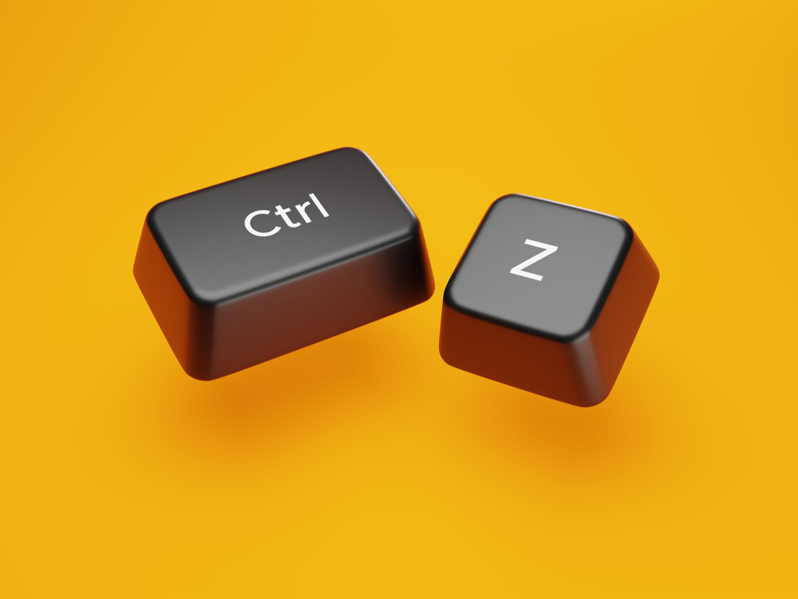

Guia de Atalhos de Teclado e Tutoriais no YouTube
Este guia reúne os atalhos de teclado mais úteis para sistemas operacionais como Windows, além de comandos essenciais para navegadores da web. Também inclui sugestões de vídeos tutoriais no YouTube para quem quer aprender, treinar e aplicar esses comandos no dia a dia.
Com a prática, os atalhos se tornam automáticos — facilitando tarefas como copiar, colar, alternar entre janelas, organizar arquivos, navegar pela internet e muito mais.
1. Atalhos de Teclado - Windows
| Copiar: | CTRL + C |
| Colar: | CTRL + V |
| Recortar: | CTRL + X |
| Desfazer: | CTRL + Z |
| Refazer: | CTRL + y |
| Selecionar tudo: | CTRL + A |
| Pesquisar: | CTRL + F |
| Salvar: | CTRL + S |
| Fechar janela: | ALT + F4 |
| Alternar entre janelas: | ALT + TAB |
| Abrir ogerenciador de Tarefas: | CTRL + SHIFT + ESC |
2. Atalhos para Navegadores
| Nova aba: | Ctrl + T |
| Fechar aba: | Ctrl + W |
| Reabrir aba fechada: | Ctrl + SHIFT + T |
| Ir para barra de endereços: | Ctrl + L |
| Abrir histórico: | Ctrl + H |
•Tutoriais no YouTube.
Tutoriais sobre atalhos no Windows:
1. Aula sobre teclas de atalho | Ensinando do Básico ao Avançado.
> Assista no youtube <2. Atalhos para iniciantes começarem a studar informática.
> Assista no youtube <3. Atalhos do windows que farão você esquecer do mouse.
> Assista no youtube <• Dicas para Praticar e Memorizar Atalhos
- Memorize 2 ou 3 atalhos por semana e pratique com frequência.
- Cole lembretes no monitor com os atalhos mais usados.
- Personalize seus atalhos nas configurações do sistema.